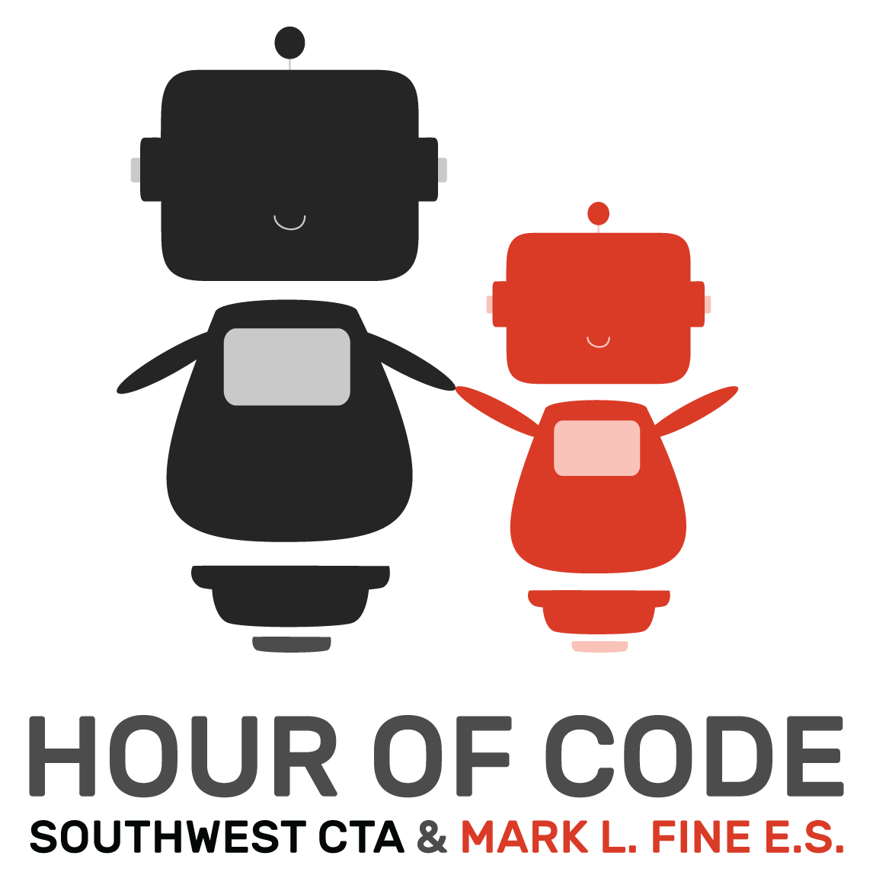

It was during Winter 2015. We worked on this project for almost a month. We were assigned to re-design the schools website. As a group, we wanted to organize the website so it was easier to navigate. We were in teams of 4-5 chosen randomly. We all had assignments and responsabilities. I was incharge of the HTML of the website. It was difficult to organize all the information into specific tabs. Also, making tables was time consuming and complicated. We worked together to finish this project and we all needed one another. We were supportive with one another at all times. We collaborated and were always willing to help. Before starting on this project, we had done some sample website that included the same principles. It is really useful to know how to rezise and make websites responsive. Now days, we have technology which allows the ability to have more resources. I gained a lot of knowledge from this project. I was able to learn some new css properties as well as learn to cooperate.Working with a group that has each others back has been an amazing experience.
It was during Fall 2015. Throughout this semester, I have been able to gain a better understanding on the elements of writing. Elements such as organization, word choice, grammar, and clarity have helped my writing skills developed extremely. For example, the thesis of an essay must be strong and clear. It should include all the points that your entire essay will be based on; it needs to hook the audience immediately.The hardest part of this essay was developing a thesis statement and organizing the information into body paragraphs. In order to keep the essay clean and reduce wordiness I had to revise it several times. During the project, I was able to improve my vocabulary by searching synonyms and antonyms of words. The one thing that I learned the most out of this essay was the to get rid of fluffiness. It made an enormous difference after completely revising the whole document.
LVGEA Logos
Work Ethic
It was during Winter 2015. As a class, we had the ability to have a client and create a logo for them. LVGEA were celebrating their 60th anniversary and were looking for someone to fullfill their needs. We were given specific requirements in order to create the logo. We started by creating rought sketches and picking out the best ones. We then designed it in Illustrator and played around with colors, alignment, space, font, etc. Since the beginning of this project, the client was always interested in my ideas. The day of the presentation, we had the clients choose who they whose presentation they wanted to watch and I was one of those people. I put a lot of hard work in order to make the logo unique and meaninguful. I wanted to keep my logos clean, straight to the point, and simple. The components I wanted to use were basic, I didnt want to use unnecessary elements. I did a lot of research in order to come up with my ideas. I learned to research the client to have a greater undestanding of their organazation.
Out of all the units we have studied this semester, the persuasive unit was my favorite. It was during Fall 2015. I was capable of learning persuasive skills that will not only help me in writing but in life as well. It was not a simple task to organize all of my ideas in a way that it flowed. Throughout the whole essay I used metaphors, similes, allusions, ethos, logos, and pathos in order to persuade the audience. We used persuasion on an everyday without being aware of the knowledge we have gained, however, is essential to understand the difference between debating and arguing. Also, knowing how to persuade and using the right elements of writing can be really useful in life, school, and work.
Hour of Code

Proffessional Presentation
Out of all the PBL's I have had this year, The Hour of Code was the best one. It was during Winter 2015. It was an amazing experience to teach little children knowledge that can change their life. The future is on their hands and giving them the opportunity to learn was amazing. I had never seen kids so exited about learning about code. Plannaing the whole event out was a challenge but it was worth it. I was in charge of third graders. I came up with the activities that would best help them learn a little bit more about programming. We went to the their school for a whole hour and explain to them about code, programming, binary, algorithm, bug, commands, debugging, function, loop, etc. This whole PBL was based on all of the tenents, however, I believe that proffessional presentation was the biggest influence. We also had to use or resouces in order to come up with the fun activities. The Hour of Code was a success.
Marketing Education Logo
Use of Resources
First client that I had ever had in my entire high school career. It was during Winter 2015. At the beginning of this project we did not have a set of rules. We were just drawing out ideas and using what we taught worked the best. In my opinion giving me a boundry its easier than knowing where to stop. I had to use a lot of resouces in order to know my audience, and client. THe picture on the left is my original idea. The day of the presentation, our client gave us specific colors she wanted. Therefore we had to change things up and adjust to the clients petition. There were only 7 students that were chosen, including me. According to Ms.Scott, my logo was choosen from her colleagues in North Caralonia. My logo was simple and straight to the point. The organazation was celebrating their 80th anniversary and wanted to have a logo that could be used in different mediums.